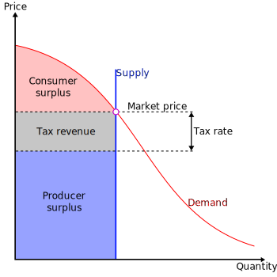
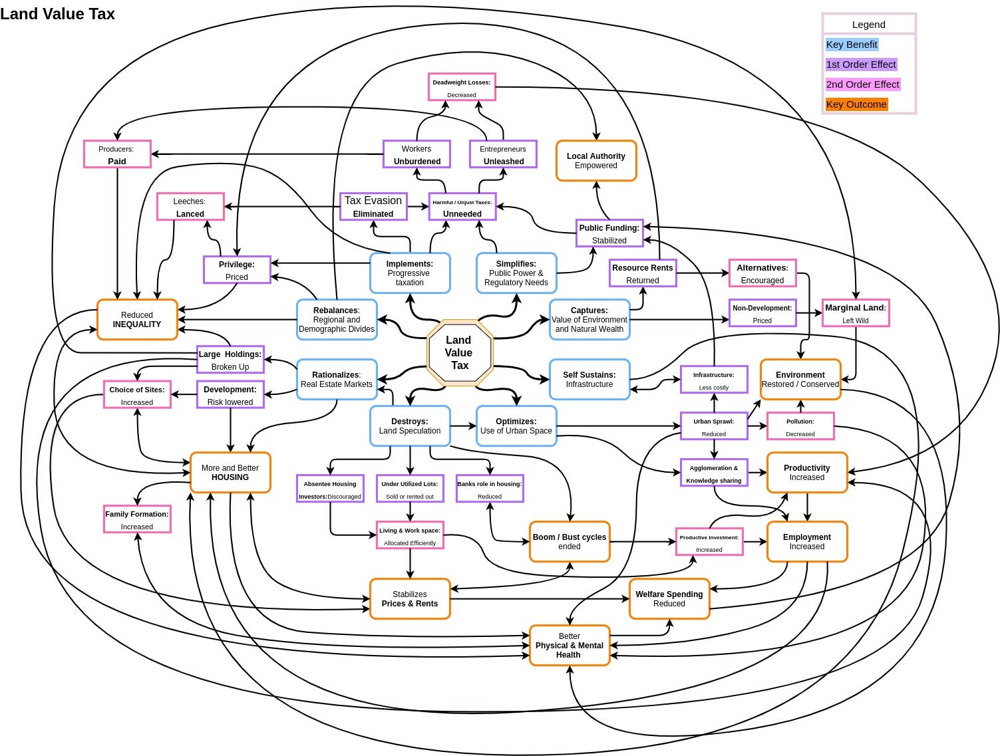

Georgism Elevator Pitch
Table of Contents
- 1. What Georgism Is, and Why It’s Worth Trying
- 2. Supply-Demand Curves For Understanding LVT
- 3. Georgism Compared to Other Economic Ideologies
- 4. Why Georgism Would Make Housing More Affordable
- 5. More Visual Infographics For Understanding Georgism
- 6. The Georgist Theory of Property Versus the OATP
- 7. Famous Economists Who Have Endorsed LVT
- 8. The Space Optimization Principle
1. What Georgism Is, and Why It’s Worth Trying
Georgism (also called Geoism, and known historically as the Single Tax Movement) is the position that sales tax, income tax, property tax, and all other taxes should all be abolished and replaced with Land Value Tax (LVT)1, which would then fund all government services and potentially even a public revenue to the people, known as the Citizen’s Dividend and similar to the Alaska Permanent Fund. The idea is that society as a whole would stand to greatly benefit from getting rid of income taxes, sales taxes, and property taxes.
By “Land”, Georgists are referring to the economic definition of land, so although Location Value Taxation1 would be the primary form of Land Value Taxation that makes up the majority of government revenue, natural resources like: mineral deposits, forests, fish stocks, atmospheric quality, airway corridors, geostationary orbits, domain names, and portions of the electromagnetic spectrum all also count as “land” (see this list for a more complete list of sources of LVT), and would be subject to the appropriate amount of Land Value Tax, as set by the market in terms of Land Rent. This is a list of benefits to be gained from using LVT instead of other taxes:
- Goods and services would become cheaper (due to abolishing sales taxes),
- Employees would command higher wages by getting to keep more of their labor (due to abolishing income taxes),
- Employers would be able to buy more labor for less money (due to abolishing income taxes),
- Housing would be more affordable (due to abolishing property taxes & landlords being incentivized to build more housing per acre),
- The economic inputs of the economy would get taxed instead of the economic outputs, so there would be incentives to use the inputs (Land & Natural Resources) more efficiently, and we should absolutely want this since there is a fixed, finite amount of valuable land and natural resources on Earth. Likewise, people wouldn’t get penalized for generating greater economic outputs.
- LVT would increase economic stability by bootstrapping the entire economy to the prices of its economic inputs, unlike the current instability where the prices of economic outputs depend on an endless circle of other economic outputs. Markets generate prices, but they generate them from other prices too, which are ultimately determined by the prices of the economy’s inputs to production, namely land since land is the source of all wealth.
- Urban sprawl would be non-existent (by eliminating land speculation and encouraging urban space to be optimized),
- Private land monopolies wouldn’t exist anymore,
- Pollution would be disincentivized (Pollution taxes are a logical conclusion from recognizing that land belongs to everyone equally2),
- Since the wealthiest people are naturally the ones who own the most land and the most valuable land, Land Value Tax would therefore reduce economic inequality, because the LVT would mostly fall on the wealthiest members of society.3
- It is extremely difficult to do tax evasion under LVT, since land cannot be concealed or moved overseas and titles are easily identified, as they are registered with the public. Land value assessments are usually considered public information, which is available upon request. This transparency reduces tax evasion.
- A person who claims land can occupy it as long as they pay the appropriate Land Value Tax for the land that they’re occupying. This resolves Tragedies of the Commons, while simultaneously ensuring that everybody benefits from it, not just the one single person who is occupying the land. This is a win-win, unlike Communism where there is the Tragedy of the Commons (ToC), or Anarcho-Capitalism where there is no ToC, but property owners get unfairly wealthy for value that they did not create.
- When everybody owns land equally2, this ensures that everybody has equal access to the three factors of production: Land, Labor, and Capital. It follows that economic productivity is increased, and wealth inequality is dramatically reduced. The massive wealth inequality that exists today is in large part caused by the skewed and unequal ownership of highly valuable land.
- Replacing all the inefficient forms of taxation with LVT would lead to a simplified tax code that would make taxes straight-forward and easy to file, while also eliminating all the wasteful economic activity that is spent each year looking for tax loopholes, deductions, and lobbying.
- Japan’s Lost Decade, the Great Recession, and China’s upcoming real estate bubble and recession never would’ve happen since it wouldn’t be possible to do land speculation anymore when all the taxes are replaced with Land Value Tax. Also note that land speculation is undesirable for all human societies since it is a form of rent-seeking.
- Cities that use pro-Georgist urban planning would have no need for cars as well as no need to save up money to buy houses (for houses, most of the value is concentrated within the land that the house sits on, not the actual house itself). By eliminating the need to buy two of the most expensive items that people will ever buy within their lifetimes, the economy becomes drastically more efficient because all the money being used to buy those expensive things (houses and cars) can now be used to buy more important things instead.
Fun Fact: the board game Monopoly and its predecessor The Landlord’s Game were actually created to demonstrate that an economy that rewards individuals is better than one where monopolies hold all the wealth and to promote the economic theories of Henry George, as noted in the second introduction paragraph of the Wikipedia article on board game Monopoly.
See the Georgism FAQs page, the Henry George AI Robot, or the Georgism Subreddit for any questions you may have, or continue reading the rest of this webpage.
2. Supply-Demand Curves For Understanding LVT
The following links show some interactive graphs, charts, numbers for modeling how the mathematics and economics of Georgism work.
- Geogebra: The Law of Rent
- Geogebra: Distribution of Wealth Between Factors of Production
- Geogebra: Land Value Tax Calculator
- Geogebra: Land Value Tax Revenues Relative to Rent and Land Value
- Geogebra: Idle Land, Unemployed Workers Caused by Incorrect Taxation

Figure 1: A supply and demand diagram showing the effects of land value taxation. As the supply of land is fixed, the burden of the tax falls entirely on the land owner. There is no change in the rental price and quantity transacted, and no deadweight loss.

Figure 2: In this case, land is taxed at 100% of its value, eliminating the landowner surplus completely. The ownership of land becomes worthless except to those who value it higher than market rents.
Figure 1: Perfectly Inelastic Supply, CC BY-SA 3.0, by Explodicle.
{kind=link}
Figure 2: Maximum Taxation With Perfectly Inelastic Supply, CC BY-SA 3.0, by Explodicle.
{kind=link}
3. Georgism Compared to Other Economic Ideologies
Unlike Capitalism, Socialism, and Communism, Georgism has never tried before, and yet it is different from all of them, as it is the only one where everybody is guaranteed equal access to all Three of the Factors of Production. It is definitely worth giving Georgism a chance to see how it performs compared to our current finder’s keepers system.
The following table shows a simplified, yet useful understanding of how Georgism compares to other more widely known economic ideologies, with respect to whether or not each one of the Three Factors of Production are private or public:

Land is the source of all wealth. Would you rather have all the money or have all the land?
Today, we can see that enormous corporations that have monopolies / private ownership over things like oil, natural gas, precious metals, diamonds, etc like British Petrol or De Beers are super rich, often earning billions of dollars every year. But is it really fair that those corporations should get billions of dollars annually, just because they managed to claim the land containing those natural resources before anybody else could, under a Finders’ Keepers system? They certainly deserve some money for doing the labor necessary for extracting those natural resources, but they didn’t do any labor to physically create the resources. Another thing that’s worth pointing out is that many/most economists would agree that land monopolies and natural monopolies are the greatest monopolies of them all since they tend to have the fewest competing alternatives when a monopoly does form.

Figure 3: You can download this image by right clicking it and saving it, if you wish. If you do so, you are encouraged to share it and spread the word. (credit to u/The_Great_Goblin on Reddit)
If you would like to view the graph above broken down, you can view it as ten different separated images at this link: Graphs of LVT Outcomes (Separated Downloadable Infographics).
4. Why Georgism Would Make Housing More Affordable

Since LVT would make landlords pay the same amount of tax no matter how much or how little housing they build on the same plot of land, LVT would encourage landlords to build more housing. This would thus make housing more affordable everywhere, whereas property taxes make housing more expensive by punishing landlords who choose to build more housing.
The diagram also helps explain why LVT cannot get passed onto the tenants, whereas property taxes can. Since LVT would increase competition in the housing market by incentivizing landlords to build more housing, housing prices would decrease, while the tax rates stay the same (unless the value of the land changes).

Video: How to be a Landlord 101: Being A Landlord Gives You The Right To One-Third Of A Household’s Income
Video: How to be a Landlord 201
5. More Visual Infographics For Understanding Georgism
Land Economics Part I: Ricardo’s Law of Ground Rent
{kind=link}
Land Economics Part II: Speculation and Idle Land
{kind=link}
Land Economics Part III: Mortgage Debt and Lending
{kind=link}
If you still want to learn more about Georgism, the most thorough and most famous resource for learning more would be the book that started it all, Progress and Poverty by Henry George (Modernized Edition).
Alternatively, you could read the Book Review of Progress and Poverty, which is much shorter and gives a decent and descriptive summary of the entire book: Book Review of Progress and Poverty
6. The Georgist Theory of Property Versus the OATP
The Original Appropriation Theory of Property (OATP) is a Finder’s Keepers approach to property and land rights. It is also the indefensible culprit behind real-estate recessions, the ever-increasing cost of housing, inefficient urban planning, increased pollution, and so much more.
The Georgist Theory of Property (GTP) can be stated using the following reasoning:
- Every person owns themself.
- Every person thus owns the labor that they produce.
- Every person thus owns anything produced by the combination of their labor and their capital.
- People can trade things that they create with their labor for things that other people create with their labor.
- Land is not created by labor.
- But land is necessary in order to be productive (because it’s one of the three factors of production: land, labor, and capital).
- In order for everybody to have an equal right to be productive4, everybody must have an equal right to land.
- In order to have a free-market economy, everybody must have an equal right to be productive4, otherwise the economy is anti-free-market.
Conclusion: In order to have a truly free-market economy, everybody must have an equal right to land. Likewise, no one should have unchecked ownership of land because they did not create the land, lest the economy be anti-free-market.
The only way how the OATP could be considered better than the GTP is that the OATP is better for people who already have power and want to maintain their existing power structures. That is indeed the reason why the world has not adopt the GTP since power is self-justifying, aside from the fact that most people don’t have good economic intuitions for understanding how a Georgism-like system would be more economically efficient for everybody overall.
Read More: Why The GTP Beats The OATP By Every Measure Possible.
Read More: Why Everybody Owns Land Equally.
7. Famous Economists Who Have Endorsed LVT
7.1. Adam Smith’s Endorsement of LVT
Adam Smith, in his 1776 book The Wealth of Nations, first rigorously analyzed the effects of a land value tax, pointing out how it would not hurt economic activity, and how it would not raise contract rents.
Ground-rents are a still more proper subject of taxation than the rent of houses. A tax upon ground-rents would not raise the rents of houses. It would fall altogether upon the owner of the ground-rent, who acts always as a monopolist, and exacts the greatest rent which can be got for the use of his ground. More or less can be got for it according as the competitors happen to be richer or poorer, or can afford to gratify their fancy for a particular spot of ground at a greater or smaller expense. In every country the greatest number of rich competitors is in the capital, and it is there accordingly that the highest ground-rents are always to be found. As the wealth of those competitors would in no respect be increased by a tax upon ground-rents, they would not probably be disposed to pay more for the use of the ground. Whether the tax was to be advanced by the inhabitant, or by the owner of the ground, would be of little importance. The more the inhabitant was obliged to pay for the tax, the less he would incline to pay for the ground; so that the final payment of the tax would fall altogether upon the owner of the ground-rent. — Adam Smith, The Wealth of Nations, Book V, Chapter 2, Article I: Taxes upon the Rent of Houses
7.2. Henry George’s Endorsement of LVT
“Now, what is necessary to enable labor to produce these things, is land. When we speak of labor creating wealth, we speak metaphorically. Man creates nothing. The whole human race, were they to labor forever, could not create the tiniest mote that floats in a sunbeam—could not make this rolling sphere one atom heavier or one atom lighter. In producing wealth, labor, with the aid of natural forces, but works up, into the forms desired, pre-existing matter, and, to produce wealth, must, therefore, have access to this matter and to these forces—that is to say, to land. The land is the source of all wealth. It is the mine from which must be drawn the ore that labor fashions. It is the substance to which labor gives the form. And, hence, when labor cannot satisfy its wants, may we not with certainty infer that it can be from no other cause than that labor is denied access to land?” (Henry George, Progress and Poverty, Book V, Chapter I, Page 272).
“But if one man owned the island, and if we went there and you people were fools enough to allow me to lay claim to the ownership of the island and say it belonged to me, then I could charge a monopoly rent; I could make you pay me every penny that you earned, save just enough for you to live; and the reason I could not make you pay more is simply this, that if you would pay more you would die. … “If we were to go to that island that we imagined, and if you were fools enough to admit that the land belonged to me, I would be your master, and you would be my slaves just as thoroughly, just as completely, as if I owned your bodies, for all I would have to do to send you out of existence would be to say to you ”get off my property.“ That is the cause of the industrial slavery that exists all over the world, that is the cause of the low wages, that is the cause of the unemployed labor.”’ (Henry George, The Land for the People, Speech 1889).
7.3. Milton Friedman’s Endorsement of LVT
7.4. Other Economists’ Endorsements of LVT
List of Quotes by Famous Economists that Land Value Tax cannot be passed onto the tenants.3
Georgism used to have a much higher amount of public support than what it has today. I have written this article to explain why Georgism lost its popularity over the 20th century. The reasons for why this happened have nothing to do with the rationality nor the feasibility of Georgism, as they detail a succession of unfortunate events.
8. The Space Optimization Principle
Formal Statement of the Space Optimization Principle:
“When the optimized arrangement of a collection of objects in space maximizes the collective value that people derive from that space’s optimized arrangement.”
List Of Phenomena Involving The Space Optimization Principle:
- Land Distribution.
- Urban Planning.
- Memory Allocation (malloc).
- If the human brain had a vastly different arrangement of all the neurological components that make it up, it probably wouldn’t work as well as it does in most cases.
- But we have to keep in mind that the brain is designed for the reproduction of the organism above all. In humans, it just so happens that there was selectionary pressure for intelligence across human history (albeit in some races more than others, but still much more compared to all other living animals on Earth).
- Examples:
- The Occipital lobe that controls vision is located in the back of the brain instead of the front.
- The left side of the brain controls the right side of the body, and the right side of the brain controls the left side of the body.
- Anything else?
- Examples:
- But we have to keep in mind that the brain is designed for the reproduction of the organism above all. In humans, it just so happens that there was selectionary pressure for intelligence across human history (albeit in some races more than others, but still much more compared to all other living animals on Earth).
- The arrangement of components on a circuit board is very important. The Raspberry Pi has its current circuit board configurations because they were the most effective for its design. Similarly, changing even one of the circuit board components of the Ergodox EZ to add more memory to the board would require upgrading the processor, which would in turn require changing the entire board.
- LIFO and FILO storage (physical).
- LIFO and FILO data structures.
- The arrangement and layout of GUIs.
- The keys on the keyboard, Qwerty vs Colemak, caps lock vs backspace to the left of the left pinky, etc.
- The heaviest materials of a planetary body tend to settle towards the center, instead of the outer layers.
- Mathematical Optimization
Footnotes:
Location Value Taxation is a more specific type of Land Value Taxation that only concerns that refers to real estate values controlled by a location’s proximity to various goods and services, although people often say “Land Value Taxation” to refer to both concepts, which creates confusion. Land Value Taxation is also referred to by some people like Blithering Genius as “Natural Resource Taxation” (NRT). In my writings, I use “Land Value Taxation” (LVT) for the more general concept because that’s the most commonly used term and Location Value Taxation to refer to the less general concept, but I understand that NRT and Land Value Taxation are interchangeable terms because land itself is defined as natural resources that exist in finite supply.
Georgism aims for everybody to have equal or near-equal ownership of land by equally redistributing land value from the people who possess land to everybody, whether they possess any land or not (after all government revenue is paid). It can be debated if this should truly be considered “equal ownership of land” since paying the government revenues is prioritized over redistributing all the land value, but it is still true that this would be a more equitable redistribution of land ownership nonetheless.
Although there is a consensus among economists that Land Value Tax cannot be passed onto the tenants, most of these conclusions have not taken into account the effects of capital markets at all. It could be the case that higher tax rates might cause an exodus of capital from real estate, unless there are factors that this arguments fails to account for. This footnote is important because if it is not true that LVT cannot be passed onto the tenants, then LVT would not be a progressive tax that primarily taxes the wealthy.
Having an equal right to be productive means having an equal opportunity to be as productive as anyone else.